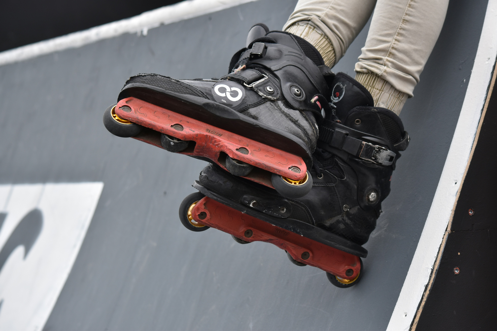

Is there anything I’m good at?

In my most recent blog post, I explored the idea that engaging in a hobby can be an effective remedy for the stress from school. So far, my search for a fulfilling hobby has yielded mixed results. I started with reading; however, I quickly found my enthusiasm depleting, and the books I picked up just didn’t hold my attention as I had hoped. I think a more active pastime would help me, so I tried tennis. It was very fun, but it was quite expensive for the equipment, court fees, and lessons; it proved to be more of a financial strain than I initially thought.
Last week, however, I went roller skating with a friend. It was an exhilarating experience, even though I took quite a few tumbles during the outing. I didn’t mind that it was physically demanding. It was quite challenging, but it was also fun and distracting. Perhaps roller skating is the hobby I’ve been searching for, offering a blend of fitness, fun, and a chance to socialise, something that could be wonderfully therapeutic amid my school-related stress.